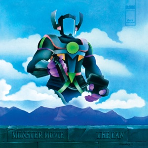
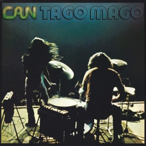
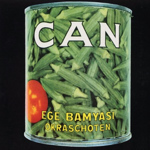
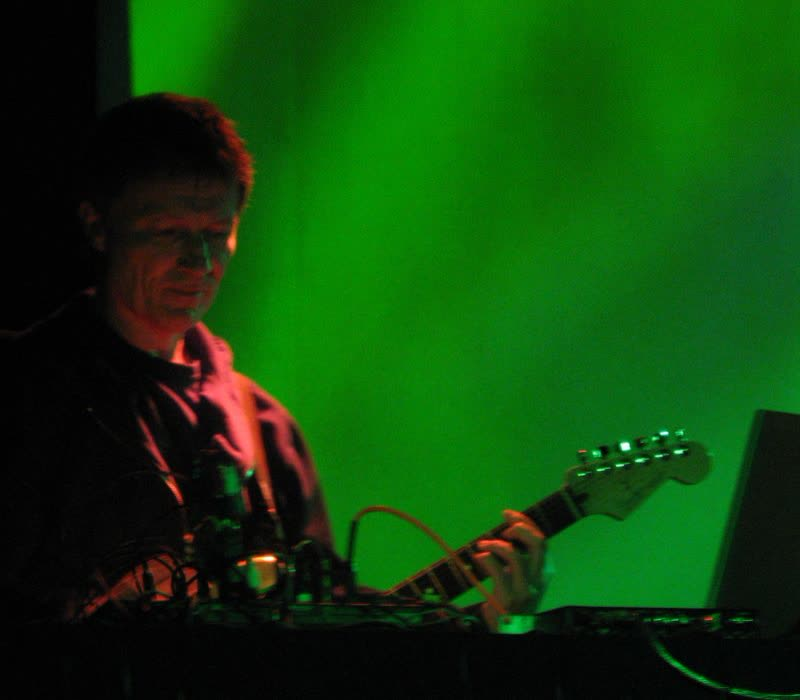
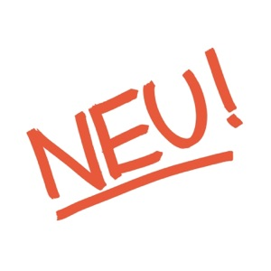
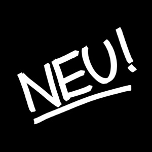

Pupils of Stockhausen
In 1968 four musicians in Cologne formed a band. Two of them, Irmin Schmidt and Holger Czukay, had studied with Karlheinz Stockhausen, the most famous composer of new music in Germany. Stockhausen made music with tape recorders, radios and electronic sounds. Schmidt was a conductor and pianist, Czukay a music teacher. Neither of them had ever played in a rock band.
The other two came from a different world. Jaki Liebezeit was a jazz drummer who had had enough of free jazz, where anything went and nobody played in time any more. He wanted to return to a tight rhythm. Michael Karoli was a young guitarist, a pupil of Czukay. Together they called themselves Can.
Can worked differently from other bands. There was no leader and no songs were written. The four played for hours, and Czukay recorded everything. Afterwards he cut the best passages out of the tapes and stuck them together, the way you edit a film. He called it composing with scissors.
A studio in a castle
In 1969 an art collector let the band rehearse for free at Schloss Nörvenich, a castle near Cologne. Can built its own studio there, with mattresses against the walls for the sound. That is where the first album, Monster Movie, came from. The singer was the American Malcolm Mooney, a visual artist travelling around Europe. He did not sing like a rock singer but repeated phrases over and over, until they became a kind of incantation.

The original piece lasted six hours. Czukay cut twenty minutes out of it. Listen to Liebezeit: he plays almost the same thing the whole time, and yet it never gets boring.
At the end of 1969 Mooney went back to America. His doctor had advised him to leave the band. In 1970 Czukay and Liebezeit were sitting on a café terrace in Munich when they saw a young Japanese man singing in the street. His name was Damo Suzuki and he was travelling through Europe with his guitar. They asked him that same evening to sing with them at a gig. Suzuki said yes and stayed for three years.
Suzuki sang in English, in Japanese and in sounds that were not a language. Tago Mago, the 1971 double album, contains Halleluhwah: eighteen minutes on a rhythm that does not stop. Liebezeit plays it like a machine, but you can hear that a human being is behind it.

Liebezeit plays one rhythm, for eighteen minutes, with small shifts. It resembles funk, but from Cologne. Hip hop artists would later use pieces of rhythms like this.
A hit from a crime series
Can was not a band for the charts. Even so, in 1972 the group reached number six in Germany. The song Spoon was the theme tune of Das Messer, a gripping crime series on television based on a story by the English writer Francis Durbridge. Millions of Germans watched. More than three hundred thousand copies of the single were sold.

It starts with a small drum machine, one of the first in a pop song. Then Liebezeit joins in and human and machine play together.
Two men and a motorway
In Düsseldorf two young musicians played for a while in the band Kraftwerk: the guitarist Michael Rother and the drummer Klaus Dinger. In 1971 they carried on together. They called themselves Neu!, with an exclamation mark, after the word printed on advertising hoardings and packaging: new! It was a joke about advertising and a promise at the same time.

Photo: Alex Ex · CC BY 3.0In December 1971 they recorded their first album in four nights in Hamburg, with the producer Conny Plank. Plank would become the most important sound engineer of the new German music. He also worked with Kraftwerk, Cluster and Harmonia, and later with Ultravox and Eurythmics.
That album contains Hallogallo. Dinger plays a rhythm that goes straight ahead, without ornament and without rest, like a car on an empty motorway. The bass pushes on every beat, and Rother's guitar floats over it in layers. Dinger called it the endlose Gerade: the endless straight line. English journalists later gave the rhythm another name: motorik.

Ten minutes without a bend. Do not listen to what changes, but to what stays the same: the drums. That makes every small shift in the guitars sound like a new landscape.
The secret of motorik
Why does a rhythm like that work? Rock drummers usually put the emphasis on the second and fourth beats, and they fill the transitions with rolls. Dinger did none of that. He kept time like a metronome, and that is exactly what created space. Your head stops looking for the chorus. You sit in the rhythm the way you sit in a train looking out of the window.
Neu! sold few records in its own time. Rother and Dinger fell out and made only two more albums together. On the last one, Neu! 75, Dinger sings Hero in a screaming voice that already points ahead to punk. Two years later the Sex Pistols sounded almost the same.

Dinger shouts rather than sings, over a guitar that just keeps going. Johnny Rotten of the Sex Pistols later named Neu! as one of his favourite bands.
David Bowie, Brian Eno, Joy Division, Sonic Youth, Stereolab and Radiohead: they all borrowed motorik. Klaus Dinger's endless straight line became one of the best-known rhythms in pop music, even though almost nobody knows his name.